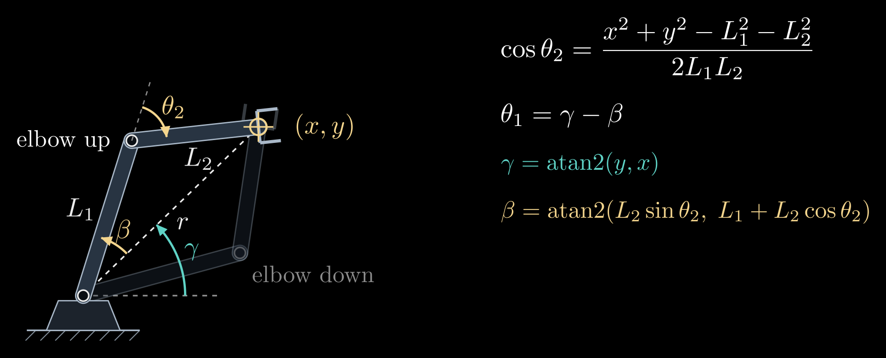
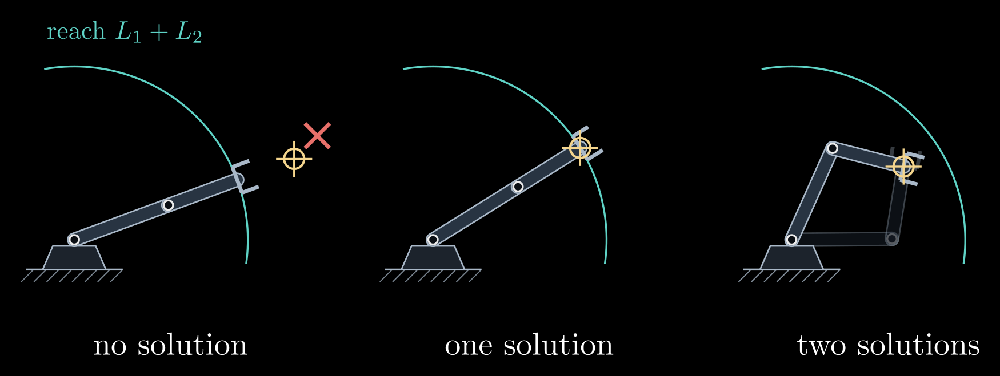
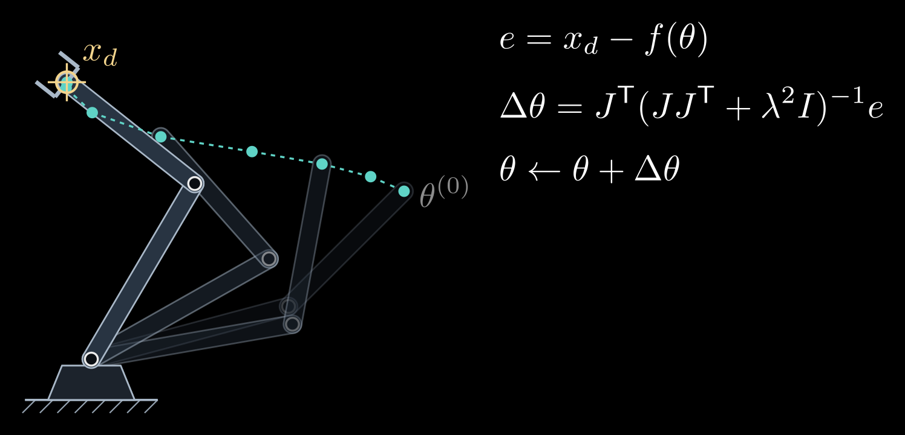
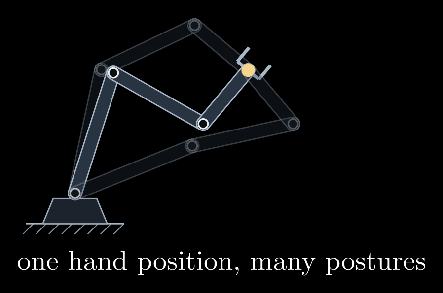

Inverse Kinematics
Inverse kinematics (IK) runs forward kinematics backward: given where the hand should be, find joint angles that put it there. Tasks are described in space (grasp the cup at this position, keep the camera pointed at the table), but motors take angles, so nearly every arm controller solves IK all the time. Unlike forward kinematics, the answer can be no solution at all, a few solutions or a whole continuous family of them, and apart from arms designed to allow it there is no formula. IK is therefore solved in one of two ways: analytically, for arms whose geometry permits a closed form, or numerically, by iteration.
This is the third of four notes on robot arms, after 3D Rotations: Matrices, Euler Angles and Quaternions and Forward Kinematics, and before The Manipulator Jacobian.
The two-link arm and the law of cosines
Take the planar arm from Forward Kinematics, with link lengths \(L_1\) and \(L_2\), joint angles \(\theta_1\) (first link from the x axis) and \(\theta_2\) (second link from the first), and a target position \((x, y)\) for the hand. The base, the elbow and the hand form a triangle with sides \(L_1\), \(L_2\) and \(r\), where \(r = \sqrt{x^2 + y^2}\) is the target's distance from the base (Figure 1). The triangle's angle at the elbow is \(180^\circ - \theta_2\), so the law of cosines, \(r^2 = L_1^2 + L_2^2 - 2 L_1 L_2 \cos(180^\circ - \theta_2)\), gives
\[\cos\theta_2 = \frac{x^2 + y^2 - L_1^2 - L_2^2}{2 L_1 L_2}\]
Call the right-hand side \(D\). Since the cosine is even, \(\theta_2\) and \(-\theta_2\) both satisfy it:
\[\theta_2 = \pm \arccos D\]
These are two mirror-image solutions, with the elbow on one side or the other of the line from the base to the target. For a target up and to the right of the base, \(\theta_2 > 0\) is elbow down and \(\theta_2 < 0\) is elbow up.
With \(\theta_2\) known, the shoulder angle is the direction of the target minus the angle between the target line and the first link:
\[\theta_1 = \gamma - \beta, \qquad \gamma = \operatorname{atan2}(y, x), \qquad \beta = \operatorname{atan2}(L_2 \sin\theta_2,\; L_1 + L_2 \cos\theta_2)\]
Here atan2(y, x) is the angle of the point (x, y) measured from the x axis, correct in all four quadrants, unlike \(\arctan(y/x)\). The angle \(\beta\) comes from where the hand sits as seen from the first link: \(L_1 + L_2\cos\theta_2\) along it and \(L_2\sin\theta_2\) across it. It is negative for the elbow-up solution, which puts the first link above the target line.

Figure 1. Inverse kinematics of a two-link arm. For a target \((x, y)\) at the distance \(r\), the law of cosines in the triangle with sides \(L_1\), \(L_2\) and \(r\) fixes the elbow angle \(\theta_2\) up to its sign, and the shoulder angle is \(\theta_1 = \gamma - \beta\). The elbow-up solution is drawn solid and the elbow-down solution faint.
In code, \(\theta_2 = \operatorname{atan2}(\pm\sqrt{1 - D^2},\, D)\) is better than \(\arccos D\): it gives the same angle but stays accurate when \(D\) is close to ±1, where the arccosine loses precision.
The value of \(D\) sorts every target into one of three cases (Figure 2):
- \(|D| > 1\): the target is farther than \(L_1 + L_2\) or closer than \(|L_1 - L_2|\), outside the workspace ring, and there is no solution.
- \(|D| = 1\): the target lies on the edge of the ring. The arm must be fully stretched (\(\theta_2 = 0\)) or fully folded (\(\theta_2 = 180^\circ\)), and the two solutions merge into one.
- \(|D| < 1\): two solutions.

Figure 2. The three cases. A target beyond the reach \(L_1 + L_2\) (teal arc) has no solution, and the arm can only point at it; a target on the arc has exactly one, with the arm straight; a target inside has two.
Which solution to use is decided outside the formula: the one within the joint limits, the one that clears obstacles, or the one closest to the arm's current configuration, so that the arm does not swing through a large motion between two nearby targets. Production code computes all the solutions and then filters them.
A 3D arm: split the problem
Analytic IK for spatial arms works by breaking the problem into small planar ones. Take the elbow arm of the forward kinematics note: a base angle \(\theta_1\) about the vertical axis, a shoulder angle \(\theta_2\) and an elbow angle \(\theta_3\) in a vertical plane, a shoulder at the height \(h\), and links of lengths \(L_1\) and \(L_2\). The base joint has to turn the arm's plane through the target \((x, y, z)\):
\[\theta_1 = \operatorname{atan2}(y, x) \quad \text{or} \quad \theta_1 = \operatorname{atan2}(y, x) + 180^\circ\]
the second choice reaching back over the top of the base. Within the arm's plane the target then lies at the horizontal distance \(\rho = \sqrt{x^2 + y^2}\) (counted as negative for the reaching-back choice) and at the height \(z - h\) above the shoulder, and the shoulder and the elbow solve the planar two-link problem for that point, which has two answers. That makes up to four solutions in all. If the target lies on the vertical axis, \(x = y = 0\), any \(\theta_1\) works: infinitely many solutions, and a singular configuration of the arm.
Most industrial six-joint arms are built so that their last three joint axes meet in one point, the wrist center, which lets the problem split further (Pieper, 1968). The target pose is a position \(p\) and an orientation \(R\). The wrist center sits a fixed distance \(\ell\) behind the gripper along its approach direction, at \(p_w = p - \ell\, R\, \hat{z}\), where \(\hat{z}\) is the approach axis in the gripper's own frame. Its position depends only on the first three joints, which are solved like the elbow arm. Those three joints fix the orientation \(R_{03}\) of the wrist's base, and the last three joints must supply the rest of the turn, \(R_{36} = R_{03}^{\mathsf T} R\), an Euler-angle extraction like the one in 3D Rotations: Matrices, Euler Angles and Quaternions. Shoulder left or right, elbow up or down, and wrist flipped or not give up to 8 solutions. A general six-joint arm without this structure can have up to 16, the roots of a polynomial of degree 16; tools such as IKFast generate closed-form solvers automatically for a given robot.
Numerical inverse kinematics
For arms without a closed form, and in most general-purpose robot software, IK is solved by iteration. Let \(f(\theta)\) be the hand position computed by forward kinematics and \(x_d\) the desired position. The goal is a configuration with \(f(\theta) = x_d\), and the error at the current guess is
\[e = x_d - f(\theta)\]
Near the current guess, forward kinematics is almost linear:
\[f(\theta + \Delta\theta) \approx f(\theta) + J(\theta)\, \Delta\theta\]
where \(J\) is the Jacobian, the matrix of partial derivatives \(J_{ij} = \partial f_i / \partial \theta_j\). Its j-th column says how fast the hand moves when only joint j turns; the next note is about this matrix. Asking the linear model to remove the whole error gives Newton's method:
\[J(\theta)\, \Delta\theta = e, \qquad \theta \leftarrow \theta + \Delta\theta\]
repeated from each new \(\theta\) until the error is negligible. Close to a solution every step roughly squares the remaining error, so a handful of iterations reach full precision. The method finds the solution whose basin of attraction contains the starting guess, usually the one nearest to it, which is what an arm moving smoothly between nearby targets wants.
When \(J\) is not square, because the arm has more joints than the task has coordinates, \(J \Delta\theta = e\) has many solutions. The pseudoinverse picks the smallest joint step that removes the error:
\[\Delta\theta = J^{+} e, \qquad J^{+} = J^{\mathsf T} (J J^{\mathsf T})^{-1}\]
where \(J^{\mathsf T}\) is the transpose of \(J\).
Both steps fail near a singularity, where \(J\) loses rank: \(J J^{\mathsf T}\) is nearly singular, the computed step becomes enormous, and the arm is flung across its workspace. The damped least-squares method, also known as Levenberg–Marquardt, asks for a step that removes most of the error without being large. It chooses the step \(\Delta\theta\), for the current \(\theta\) and \(e\), to minimize
\[\| J \Delta\theta - e \|^2 + \lambda^2 \| \Delta\theta \|^2\]
The first term is the error the linearized step would leave behind, the second a penalty on the size of the step, and the damping constant \(\lambda\) sets the trade-off between them. The minimizer is
\[\Delta\theta = J^{\mathsf T} (J J^{\mathsf T} + \lambda^2 I)^{-1} e\]
where \(I\) is the identity matrix. Far from singularities \(J J^{\mathsf T}\) dominates and this is almost the pseudoinverse step; close to them the \(\lambda^2 I\) term keeps the step bounded, at the price of slow progress in the direction the arm can barely move. Its failure mode is the opposite of Newton's: with too large a \(\lambda\) the iteration crawls, and at an exact singularity it stops short of the target instead of blowing up (Figure 3).

Figure 3. Damped least squares in action. Starting from \(\theta^{(0)}\), each step moves the hand (teal dots) toward the target \(x_d\); the faint arms are some of the intermediate configurations. Here \(\lambda\) is a quarter of the second link's length, and each step is capped at 20° of joint motion, a common safeguard.
A cheaper relative is the Jacobian-transpose method, \(\Delta\theta = \eta\, J^{\mathsf T} e\) with a small step size \(\eta\). It is gradient descent on \(\tfrac{1}{2}|e|^2\), half the squared distance to the target, needs no matrix inverse and converges slowly.
To reach a full pose and not only a position, the error gets three more entries for the orientation. The orientation still missing is the rotation \(R_d\, R(\theta)^{\mathsf T}\), from the hand's current orientation \(R(\theta)\) to the desired \(R_d\), written as a rotation vector (axis times angle, from the rotations note), and \(J\) becomes the 6×n Jacobian of the next note.
In practice solvers start from the current configuration, clamp the result to the joint limits after each step, cap the step size, and restart from random configurations when the iteration stalls; KDL, TRAC-IK and Pinocchio, and planners built on them such as MoveIt, all work this way. Seen as optimization, IK minimizes \(\tfrac{1}{2}|x_d - f(\theta)|^2\) over \(\theta\) subject to the joint limits, and extra terms, such as staying close to a preferred posture or away from obstacles, slot into the same objective.
Redundancy
An arm with more joints than its task needs is redundant: a planar three-link arm placing its hand at a point, or a seven-joint arm reaching a 6D pose. Its solutions form a continuous family, so the arm can move its joints while the hand stays still. This is self-motion, the way a person can swing an elbow while keeping a fingertip on a table (Figure 4).

Figure 4. A redundant arm: three links put the hand on the same point (yellow) in different postures, and every posture in between works too.
The joint motions that do not move the hand form the null space of \(J\), the steps \(\Delta\theta\) with \(J \Delta\theta = 0\). The general step that removes the error is
\[\Delta\theta = J^{+} e + (I - J^{+} J)\, z\]
for any joint-space vector \(z\). The first term moves the hand; the projector \(I - J^{+} J\) strips from \(z\) every part that would move the hand, so the second term is pure self-motion. Choosing \(z\) as the gradient of a secondary goal, such as distance from the joint limits or from obstacles, or the manipulability of the next note, lets the arm pursue that goal for free while the hand keeps to its task. This is why human arms, and many collaborative robots, have seven joints: the spare one lets the elbow get out of the way.